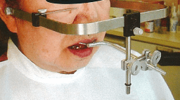
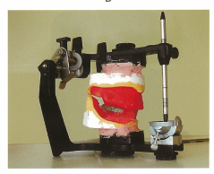

ゴシックアーチ描記法（gothic arch tracing method）は、水平的顎間関係の記録法の1つである。定められた咬合高径において下顎の左右の側方限界運動の軌跡を描記させ、その描記図をもとに水平的な顎間関係の決定や診断を行う。
| 方法 | 特徴 |
|---|---|
| 口内描記法 | 描記時の安定性に優れる。装置の操作性に優れる。描記図が小さく識別しにくい。 |
| 口外描記法 | 描記中に運動軌跡を直接観察できる。装置が大きく安定性に欠ける。 |
水平的顎間関係の決定や顎機能の診断を行うには、以下の点を評価する。
フェイスボウは、顎関節と上顎歯列の位置関係を咬合器に再現するために使用する装置である。
| 基準点 | 位置 | 対応する平面 |
|---|---|---|
| 後方基準点 | 外耳孔または顆頭点 | − |
| 前方基準点 | 眼窩下点 | フランクフルト平面 |
| 鼻翼下縁 | カンペル平面（HIP平面に最も平行） |
ゴシックアーチ描記により水平的顎間関係を記録した後、以下の手順で進む。
注意：仮想咬合平面の設定や前歯部咬合堤の豊隆・高さの決定は、ゴシックアーチ描記の前（垂直的顎間関係の記録時）に行う。
66歳の女性。上下顎全部床義歯の製作を希望して来院した。診療過程の写真（別冊No.36A、B）を別に示す。Aの操作を経てBの状態に至った。
これ以降に行うのはどれか。2つ選べ。


【解説】写真Aはゴシックアーチ描記、写真Bは咬合床の咬合器装着後の状態。ゴシックアーチ描記後は人工歯選択と矢状顆路傾斜角の設定を行う。仮想咬合平面の設定や咬合堤の調整は、ゴシックアーチ描記前に完了している。
基準平面がHIPプレーンに最も平行になるフェイスボウトランスファーの前方基準点はどれか。1つ選べ。
【解説】HIP平面（切歯乳頭と左右ハミュラーノッチを結ぶ平面）はカンペル平面とほぼ平行である。フェイスボウの前方基準点に鼻翼下縁を使用するとカンペル平面を基準とし、HIP平面に最も平行になる。眼窩下点はフランクフルト平面の基準点。
顎関節と上顎歯列の位置関係を咬合器に再現する目的で用いるのはどれか。1つ選べ。
【解説】フェイスボウは顎関節と上顎歯列の位置関係を咬合器に再現する。ゴシックアーチトレーサーは水平的顎間関係の記録、チェックバイトは顆路傾斜角の設定、パントグラフは下顎運動の記録に用いる。